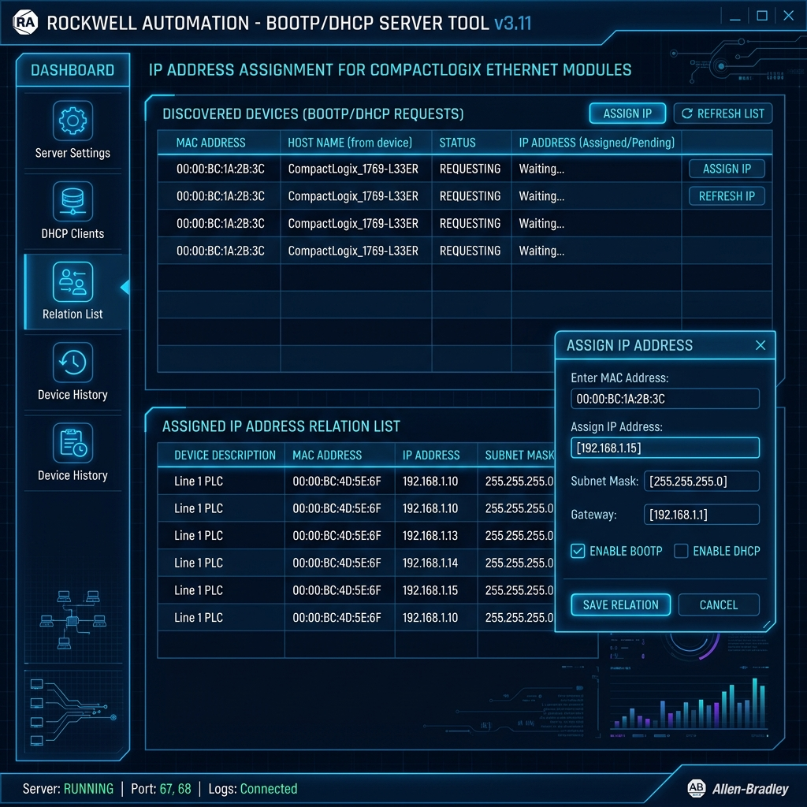

Cómo Configurar la Dirección IP de un PLC CompactLogix Usando BOOTP/DHCP Server
Publicado por el Equipo de Ingeniería de Robologix Automation | Saltillo, Coahuila
Resumen de Ingeniería:
Cuando se instala un controlador Allen-Bradley nuevo de fábrica (como CompactLogix 5370/5380 o tarjeta EN2T), el puerto Ethernet viene configurado en modo DHCP/BOOTP por defecto (dirección IP 0.0.0.0). Para asignarle una dirección IP estática sin necesidad de pantalla ni tarjeta SD, se utiliza la utilidad BOOTP-DHCP Server de Rockwell Automation asociando la dirección física MAC del dispositivo con la IP deseada en la red local.

Entorno de la utilidad BOOTP-DHCP Server en enlace con RSLinx Classic.
Procedimiento Paso a Paso:
- 1. Conexión Física Directa: Conecte un cable Ethernet de parcheo desde el puerto de la laptop de servicio directamente al puerto Ethernet del CompactLogix. Ajuste la IP de su laptop en la misma subred (ejemplo: 192.168.1.200 / 255.255.255.0).
-
2. Identificar la Dirección MAC: Anote la dirección MAC impresa en la etiqueta frontal o lateral del procesador (formato:
00:00:BC:XX:XX:XX). - 3. Abrir la herramienta BOOTP-DHCP Server: Ejecute la aplicación como Administrador en Windows. Asegúrese de seleccionar la tarjeta de red (NIC) adecuada en la configuración inicial.
-
4. Asignar la Dirección IP: En el panel superior (Request History), ubique la dirección MAC de su equipo. Haga doble clic sobre ella, ingrese la IP estática asignada a la celda (ejemplo:
192.168.1.10) y presione OK. - 5. ¡Paso Crítico! Deshabilitar BOOTP/DHCP: Una vez asignada la IP, seleccione el dispositivo en el panel inferior (Relation List) y haga clic en Disable BOOTP/DHCP. Esto guardará de forma permanente la IP en la memoria no volátil del PLC para que no se pierda al reiniciar la energía.
Servicios de Redes Industriales Robologix
Configuración de anillos DLR y segmentación VLAN con switches Stratix administrados.
Solución a conflictos de IP, pérdidas de paquetes CIP y caídas de comunicación en nave.
Atención presencial rápida en los parques de Saltillo, Ramos Arizpe y Arteaga.
Artículos Técnicos Relacionados:
¿Tiene Dificultades para Comunicarse con sus PLC o Configurar Redes EtherNet/IP?
En Robologix Automation brindamos soporte de comisionamiento de redes industriales, switches administrados Stratix y diagnóstico de comunicaciones en Saltillo.
Solicitar Asistencia de Redes PLC